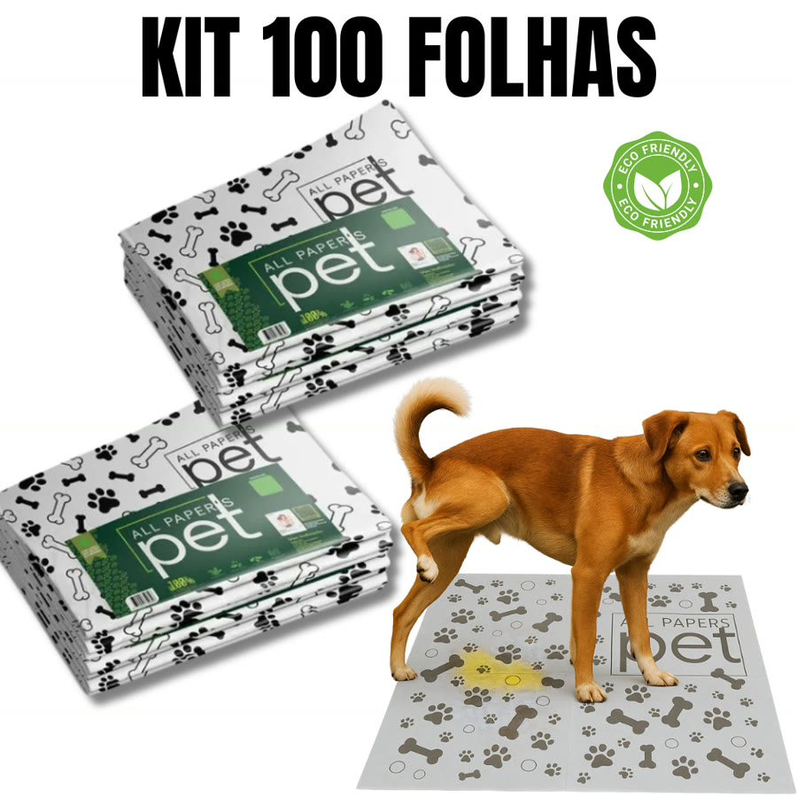
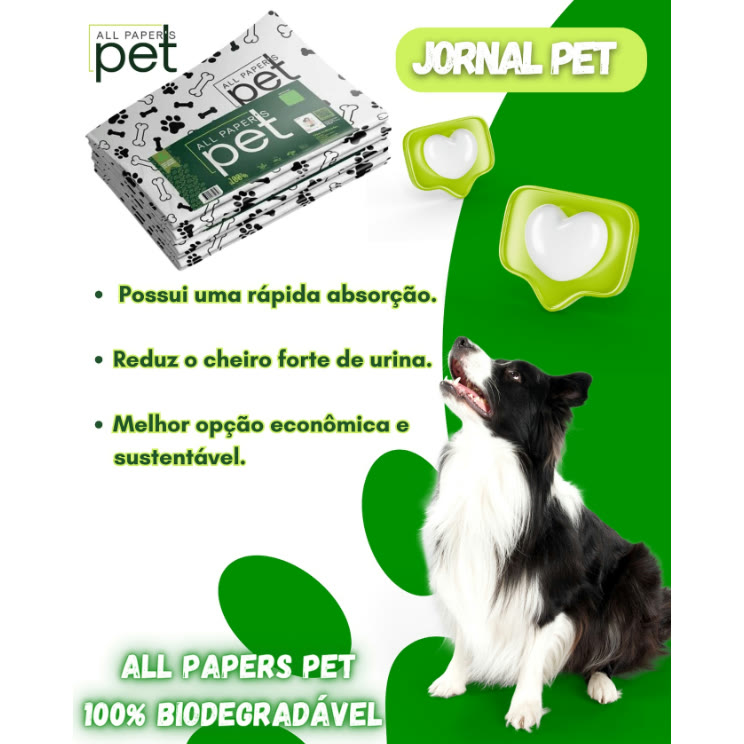
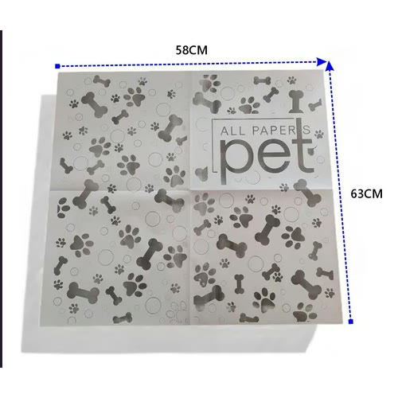
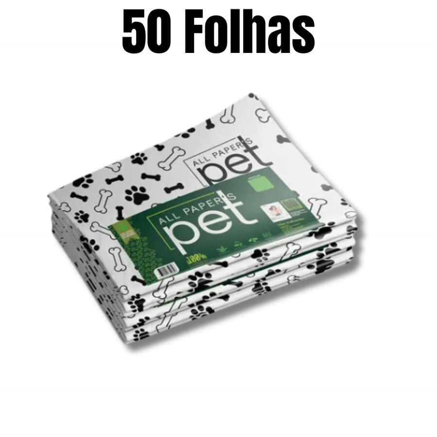
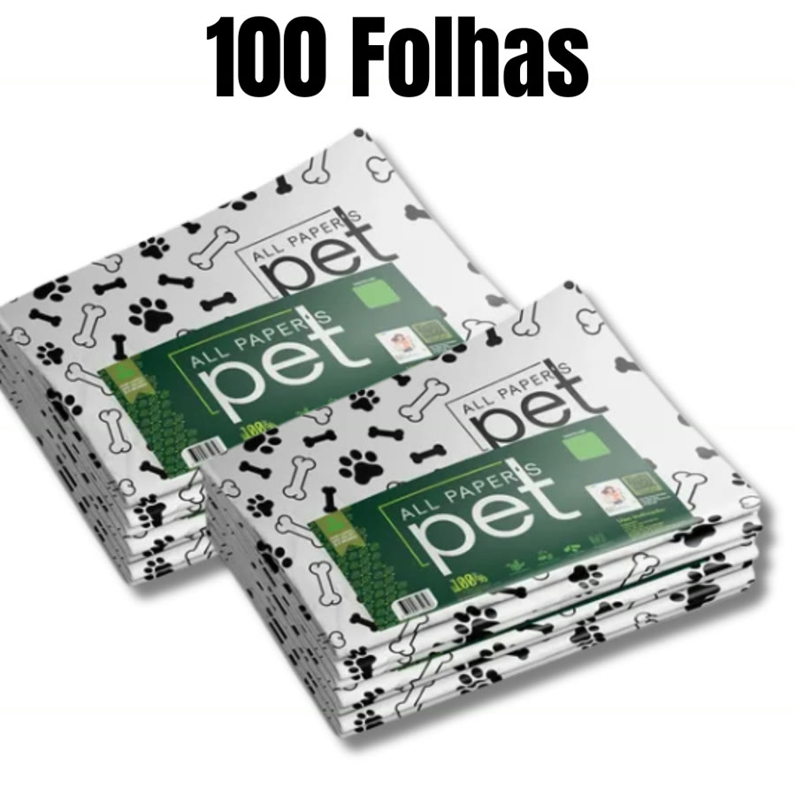
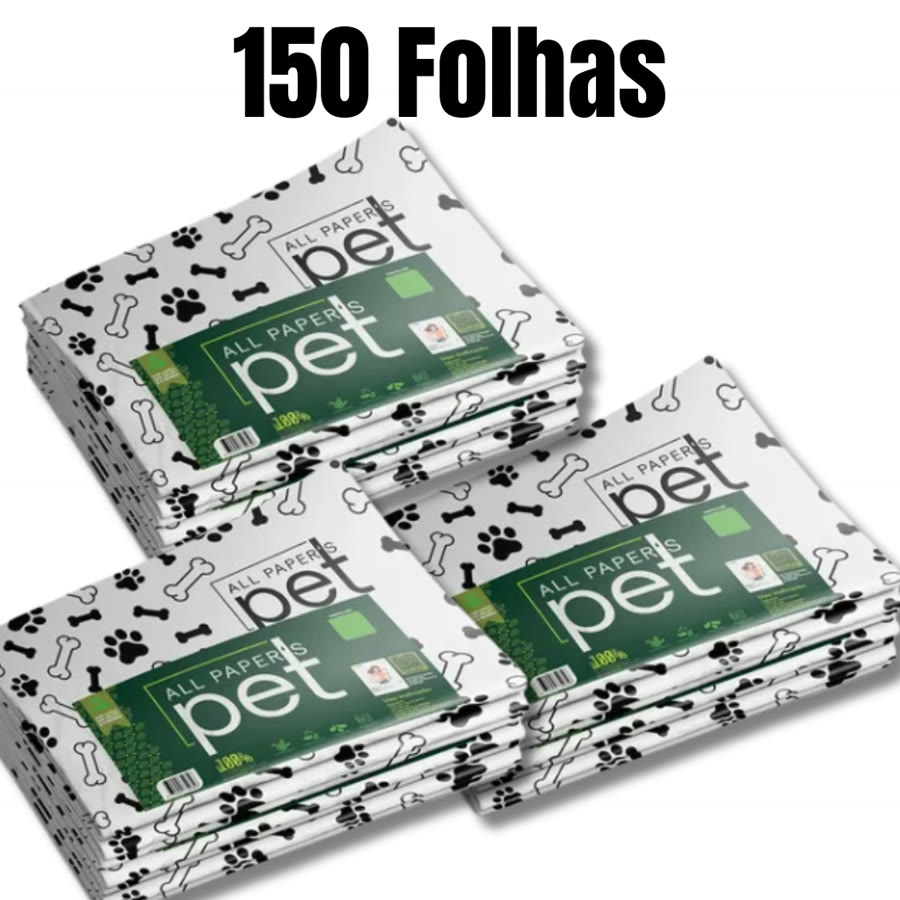
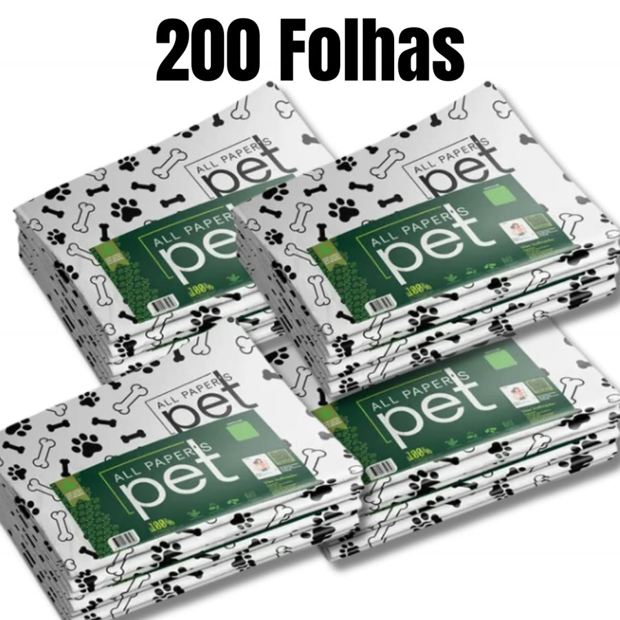

Achado nº 18
Jornal pet higiênico (folhas para xixi de cachorro)







O que diz a página oficial do produto
- São folhas de papel parecidas com jornal, feitas para forrar o lugar do xixi do pet
- Segundo o anúncio, não é jornal velho nem reutilizado
- Cada folha aberta mede 58 cm por 63 cm; segundo o anúncio, equivale a uma folha de jornal padrão
- Segundo o anúncio, o papel é de alta gramatura, a tinta é à base d'água e as folhas são biodegradáveis
- Vendido em kits de 50, 100, 150 ou 200 folhas
- Segundo o anúncio, serve para cães e também para forrar gaiolas de roedores e aves
- Na Shopee, tem mais de 60 mil vendidos
Link de afiliado: se você comprar por ele, a Achadaria pode receber uma comissão, sem custo extra para você. Preço, estoque e entrega são da loja e podem mudar; confira lá antes de comprar.